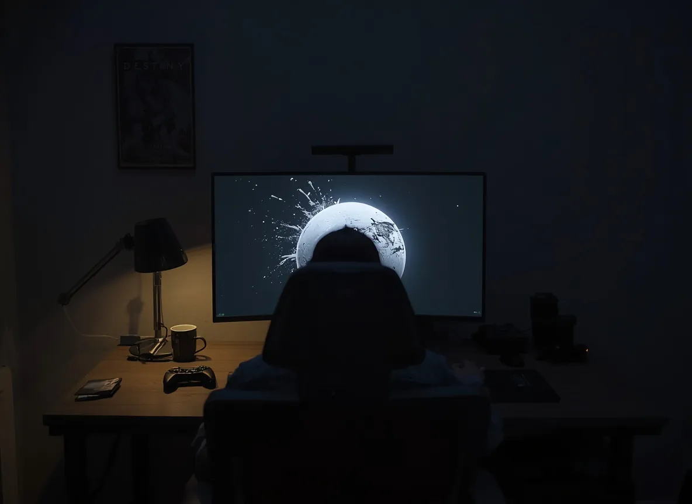

Destiny 2 End of Life: All Expansions Canceled, Bungie Moves to Maintenance Mode

Table of Contents
- Bungie's Official Announcement — The Exact Words
- Monument of Triumph: Everything in the Final Update
- Full Timeline: How Destiny 2 Got Here
- Why Destiny 2 Ended — The Real Reasons
- Marathon: The Gamble That Accelerated Destiny's Death
- Sony's $765 Million Loss — What It Means
- What Maintenance Mode Actually Means for Players
- Warframe vs Destiny 2 — Why One Thrived and One Didn't
- Will There Be a Destiny 3?
- Frequently Asked Questions
- Conclusion
On Thursday, May 21, 2026, Bungie published a blog post that ended nearly nine years of Destiny 2 expansions. All planned future content is canceled. The final live-service update — called Monument of Triumph — will release on June 9, 2026, available free to all players. After that, Destiny 2 enters permanent maintenance mode: servers stay online, the game remains playable, but no new content will ever come.
Forbes writer Paul Tassi, who has covered the franchise since its 2014 debut, summed it up in four words: "Destiny 2 is ending. All expansions cancelled." For a player base that has collectively logged billions of hours across almost twelve years of the Destiny franchise, this is the definitive end of an era.
Bungie's Official Announcement — The Exact Words
Bungie's statement was unsigned — attributed to the studio collectively rather than any individual. The key passage:
The statement also acknowledged the community directly: "For almost twelve years, we've had the great pleasure and honor of exploring the Destiny universe together with you. Despite all the highs and lows, surprises and successes, it has been an immense privilege for us to shape Destiny together with our players."
Breaking: What This Means Right Now
If you are a current Destiny 2 player: the game is still fully playable. No content is being deleted or locked. All your gear, progress, and characters remain. The change is that no new expansions, seasons, or story content will ever be added after June 9, 2026.
Monument of Triumph: Everything in the Final Update
Monument of Triumph was originally conceived as a mid-cycle update called Shadow and Order before Bungie reframed it as the game's closing chapter. It is free to all players and launches June 9, 2026. Here is everything confirmed for the final update:
| Feature | Details |
|---|---|
| Destiny 2: The Collection | All previous DLC, campaigns, and dungeon passes bundled into a single purchase — replacing the fragmented current DLC structure |
| Director Navigation Restored | Original Director map navigation interface returning — removed years ago to much player criticism |
| Pantheon 2.0 | Boss parade activity returning as a permanent mode (was previously a limited-time event) |
| Tiered Loot | All raid and dungeon weapons upgraded to current stat tiers — addressing years of complaints about outdated weapon rolls |
| Transmog Expansion | Legendary armor skins can now be projected onto exotic armor pieces in PvE — a long-requested feature |
| Seasonal Events Retired | All seasonal event rewards moved to a permanent in-game kiosk — accessible year-round |
| Sparrow Racing League | Returns as a permanent mode — last appeared years ago and was one of the most-requested returning features |
| Final Moments of Triumph | One last seasonal Moments of Triumph event to close out the game's live-service era |
The update represents Bungie's attempt to leave the game in the best possible state for players who continue to return to it in maintenance mode. Many of the changes — transmog expansion, tiered loot, Sparrow Racing — are features the community had requested for years. They are arriving as parting gifts rather than foundations for future seasons.
Full Timeline: How Destiny 2 Got Here
Why Destiny 2 Ended — The Real Reasons
The surface reason is the statement Bungie gave: it is time to move on and incubate new games. The real reasons are more specific and more painful.
The Final Shape was a natural ending point that Bungie couldn't follow. The 2024 expansion concluded the 10-year Light and Darkness saga in a way that genuinely satisfied the community. What was supposed to come next — a new story arc called Codename: Frontiers — never built momentum. Without a compelling new story direction, content dropped after The Final Shape felt like filler.
The Marathon pivot drained Destiny 2's development capacity. When Bungie made Marathon its primary focus, it pulled hundreds of developers away from Destiny 2. The resulting six-month content drought — with nothing meaningful to engage returning players — drove the community elsewhere. Players who left during the drought found other games and largely did not return.
Marathon failed to replace Destiny 2's audience. The plan, apparently, was that Marathon's success would replace the revenue that Destiny 2 could no longer reliably generate. Marathon launched to poor reception and never approached Destiny 2's player counts, even at Destiny's lowest point.
Sony's financial pressure became unbearable. Sony paid $3.6 billion for Bungie in 2022. Four years later, they are recording $765 million in impairment losses against that valuation. That is not the trajectory of an acquisition delivering on its promises.
Also Read
More Gaming Stories →Marathon: The Gamble That Accelerated Destiny's Death
Marathon is Bungie's extraction shooter — a genre revival of the classic Marathon franchise from the 1990s. The decision to build it was understandable: the extraction shooter genre was growing, and Bungie's technical expertise in shooting mechanics was unmatched. The execution, however, did not match the ambition.
Marathon launched with underwhelming player numbers. By the end of its first season, active player counts were already below those of Destiny 2 — a game that had been suffering through a six-month content drought and active community exodus. For a new game with an established studio's full resources behind it, this was a catastrophic underperformance.
The irony is brutal: Bungie sacrificed Destiny 2 — a proven, community-beloved franchise with a decade of investment behind it — to fund the development of a new game that launched to numbers worse than the game it was meant to replace.
Sony's $765 Million Loss — What It Means
Sony Interactive Entertainment acquired Bungie for $3.6 billion in January 2022. The acquisition was Sony's biggest ever gaming studio purchase. The premise was that Bungie would deliver a steady pipeline of successful live-service games, supplementing PlayStation's traditionally single-player-focused portfolio.
In Sony's subsequent financial reporting, the company recorded $765 million in impairment losses against Bungie's carrying value. An impairment loss occurs when the assessed value of an asset falls below what was originally paid for it — it is an accounting acknowledgment that the acquisition has not performed as expected.
Sony has not announced plans to sell or shut down Bungie. The studio remains a Sony subsidiary and Marathon remains its active project. But the $765 million impairment against a $3.6 billion purchase price — combined with multiple rounds of layoffs at Bungie since 2023 — represents one of the most publicly documented underperforming major studio acquisitions in recent gaming history.
What Maintenance Mode Actually Means for Players
If You Still Play Destiny 2 — Read This
Maintenance mode does NOT mean the game is shutting down. Bungie specifically compared it to the original Destiny 1, which has been in maintenance mode since 2019 and remains playable today in 2026. Your characters, gear, and progress are safe. The raids, dungeons, strikes, and story campaigns remain accessible. You just won't get new content after June 9.
| Feature | After June 9, 2026 |
|---|---|
| Servers | Online — no shutdown planned |
| Existing content | All raids, dungeons, campaigns, strikes, PvP accessible |
| Your characters and gear | Preserved — no deletions |
| New expansions | Never — all canceled |
| New seasons | Never — all canceled |
| New raids | Never |
| Bug fixes | Occasional — basic maintenance only |
| New events | None planned |
| Destiny 2: The Collection | Available as single purchase from June 9 |
Warframe vs Destiny 2 — Why One Thrived and One Didn't
Warframe and Destiny 2 launched in the same era and competed directly for the same audience — players who wanted a free-to-play (or free-to-access), looter-shooter experience with regular content updates. Their trajectories could not be more different.
| Factor | Warframe (Digital Extremes) | Destiny 2 (Bungie) |
|---|---|---|
| Developer ownership | Independent — Digital Extremes owns it outright | Sony acquisition — $3.6B acquisition pressure |
| Content cadence | Consistent updates throughout the year | Prone to content droughts; fatal 6-month gap in 2025 |
| Free-to-play model | Genuinely F2P — all content earnable in-game | Premium expansions required for major content |
| Content vault | No vaulting — all content accessible | Massive content vaulting — older content deleted |
| Second game | No pivot to a second title | Pivoted to Marathon, draining Destiny 2 resources |
| Status in 2026 | Active, healthy player base | Entering permanent maintenance mode |
The most consequential difference is the content vault. Bungie's decision to delete older Destiny 2 content to manage game size — removing beloved campaigns like Forsaken, Red War, and others from the game entirely — permanently alienated a significant portion of the player base and prevented new players from experiencing years of story content. Warframe never vaulted content.
Will There Be a Destiny 3?
Bungie's May 21 statement referenced "incubating our next games" — notably plural, and notably not specifying Destiny. This is the clearest signal yet that Bungie's post-Marathon roadmap may not include a direct Destiny sequel, at least not as an immediate priority.
Multiple Bungie developers have departed the studio in 2025 and 2026, including lead writers and designers who were central to Destiny's creative identity. One confirmed departure — Lead Writer who went to CD PROJEKT RED's Project Sirius — represents exactly the kind of talent loss that would complicate building Destiny 3 even if the project existed.
A Destiny 3, if it ever exists, is realistically at minimum 4–5 years away from the current date, and would require Bungie to rebuild its development capacity substantially. Given Sony's financial pressure and the need for Marathon to succeed first, Destiny 3 appears to be a distant possibility rather than an active project.
Key Takeaways
- Bungie confirmed on May 21, 2026: all future Destiny 2 expansions are canceled permanently.
- Final update Monument of Triumph launches June 9, 2026 — free to all players. Includes Sparrow Racing League, Pantheon 2.0, transmog expansion, tiered loot, and Destiny 2: The Collection bundle.
- After June 9: permanent maintenance mode — servers stay online, game playable, but zero new content ever.
- Primary cause: six-month content drought caused by mass developer shift to Marathon, which then launched to player counts below Destiny 2's record lows.
- Sony recorded $765 million in impairment losses against Bungie's $3.6 billion 2022 acquisition price.
- Destiny 2 launched September 6, 2017 — the game ran for nearly 9 years across 7 major expansions.
- Destiny 3 has not been announced and appears years away, if it ever exists.
- Bungie's statement referenced "new games" — suggesting their next project may not be Destiny at all.
Frequently Asked Questions
What did Bungie announce about Destiny 2 on May 21, 2026?
Bungie announced that active development of Destiny 2 is ending permanently. All planned future expansions are canceled. The final update Monument of Triumph releases June 9, 2026, after which the game enters permanent maintenance mode.
What is in the Monument of Triumph final update?
Free to all players on June 9: all previous DLC bundled as Destiny 2: The Collection; Director navigation restored; Pantheon 2.0 as permanent mode; tiered loot for all raid/dungeon weapons; transmog expanded to exotic armor in PvE; all seasonal event rewards at a permanent kiosk; Sparrow Racing League returning permanently; and a final Moments of Triumph event.
Why is Destiny 2 ending?
A six-month content drought caused by the shift to Marathon development, Marathon's underwhelming launch, record-low player counts, Sony's $765 million impairment loss on its $3.6 billion Bungie acquisition, and the lack of a compelling post-Final Shape story direction.
What happened to Marathon?
Marathon launched to poor reception and ended its first season with player counts below Destiny 2's numbers — even during Destiny's worst content drought. Despite this failure, it remains Bungie's primary active project.
What is maintenance mode for Destiny 2?
Servers stay online, game stays playable, all existing content accessible. No new expansions, seasons, raids, or story content will ever be released. Only basic bug fixes may occasionally occur. Bungie compared it to the current status of the original Destiny 1.
Will there be a Destiny 3?
Bungie has not announced Destiny 3. Their May 21 statement referenced "new games" without naming Destiny. Given layoffs, Marathon focus, and Sony financial pressure, a sequel appears at minimum 4–5 years away, and may never happen.
How long did Destiny 2 run?
Destiny 2 launched September 6, 2017. Final update June 9, 2026 — a run of 8 years and 9 months across 7 major expansions including The Witch Queen, Lightfall, and The Final Shape.
Conclusion
The end of Destiny 2 is a tragedy that was not inevitable. The game was, at its best, among the finest multiplayer experiences ever made. The Witch Queen expansion is one of the best single pieces of game design in the live-service genre's history. The Vault of Glass raid remains a benchmark that nothing in the category has surpassed. The Final Shape delivered a narrative conclusion that most live-service games never achieve.
What killed Destiny 2 was not the game itself. It was the decision to bet the studio's future on Marathon before Destiny 2 had a credible successor to The Final Shape's story arc. When Marathon underperformed, Bungie was left in the worst possible position: a flagship game in irreversible decline and a replacement game that couldn't replace it.
Sony's $765 million impairment loss is the financial verdict. The community's grief on May 21, 2026 — visible across Reddit, Discord, YouTube, and social media — is the human one. After nearly twelve years of shared Destiny, the Guardians are finally being sent home.

Marcus J. Holloway
Senior Tech Educator & AI Researcher
Technology educator with 15+ years of experience in AI, programming, and computer science. Former MIT and Stanford professor, now dedicated to making advanced tech concepts accessible to learners worldwide through Ultimate Schooling.
💬 Questions or Comments?
Have a question about this article or want to share your thoughts? Leave a comment below!